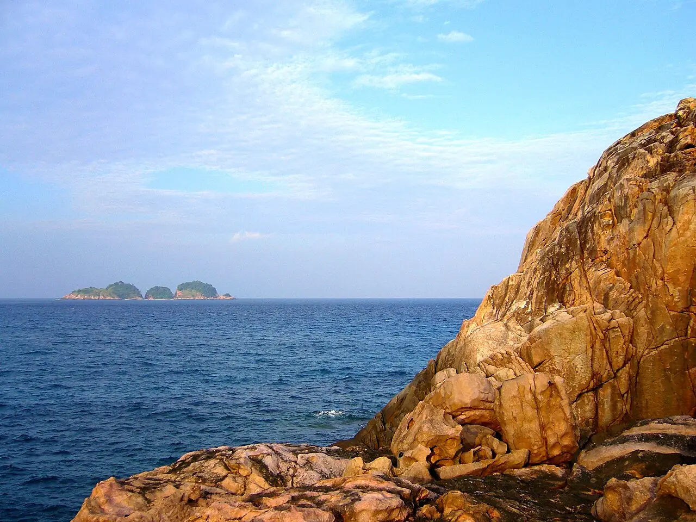

Pulau Redang
Terengganu, Malaisie · snorkeling, plongée, baignade

Île du parc marin de Terengganu, au large de la côte est de la péninsule malaise. Plages de sable blanc et récifs frangeants se prêtent au snorkeling, souvent avec des tortues.
- Lieu
- Terengganu, Malaisie
- Niveau
- Débutant
- Activités
- snorkeling, plongée, baignade
- Type d'eau
- Mer / océan
- Coordonnées
- 5.77, 103.03 (position approximative du secteur)
Dangers à connaître
- Bateaux et navettes près des plages.
- Coraux fragiles : ne marche pas sur le récif.
Le conseil d'Ocean Buddy
Viens entre mars et octobre : pendant la mousson de nord-est, la mer est forte et beaucoup d’hébergements ferment.
Ouvrir dans Ocean Buddy Télécharger sur l'App Store
Source : Fiche Ocean Buddy · septembre 2026 · à vérifier localement.